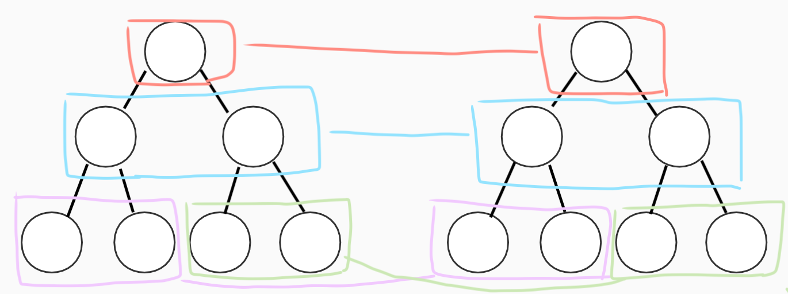
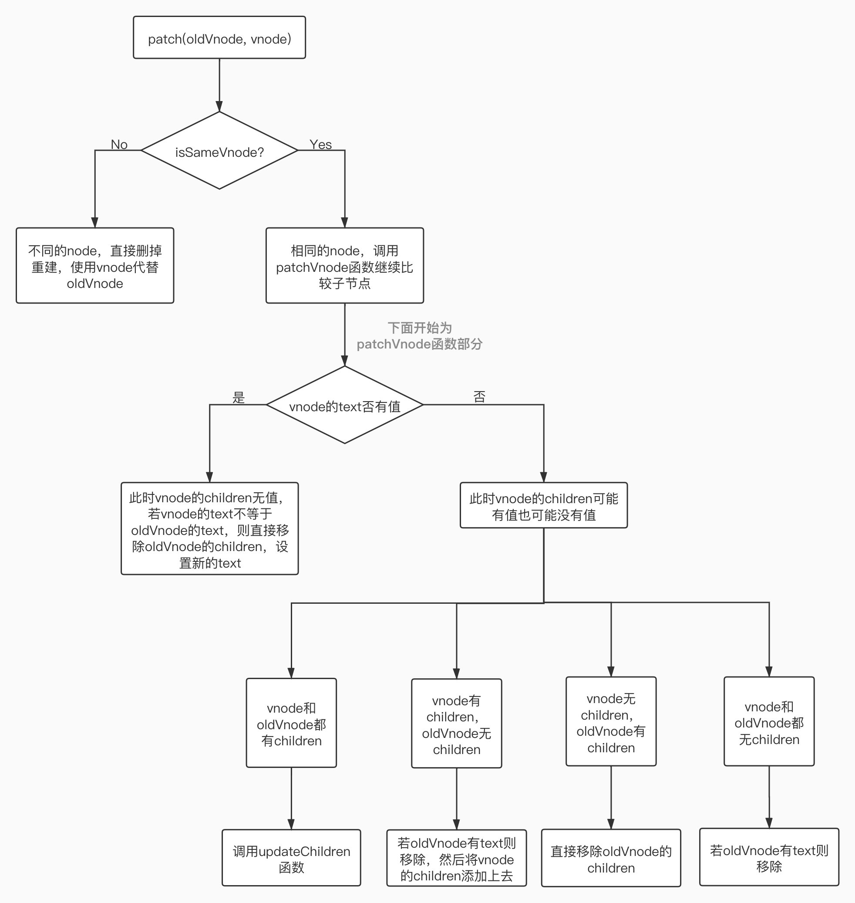
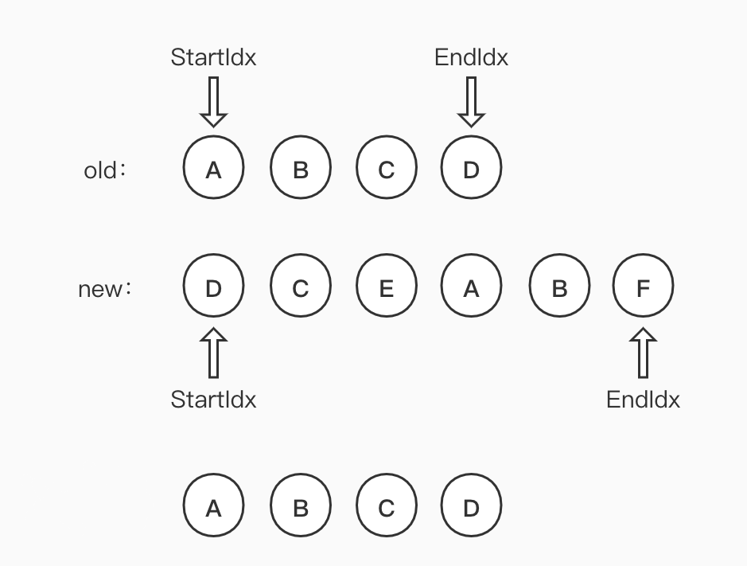
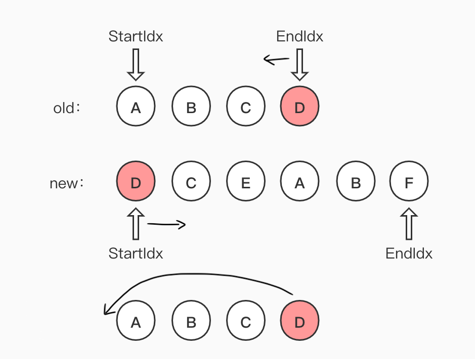
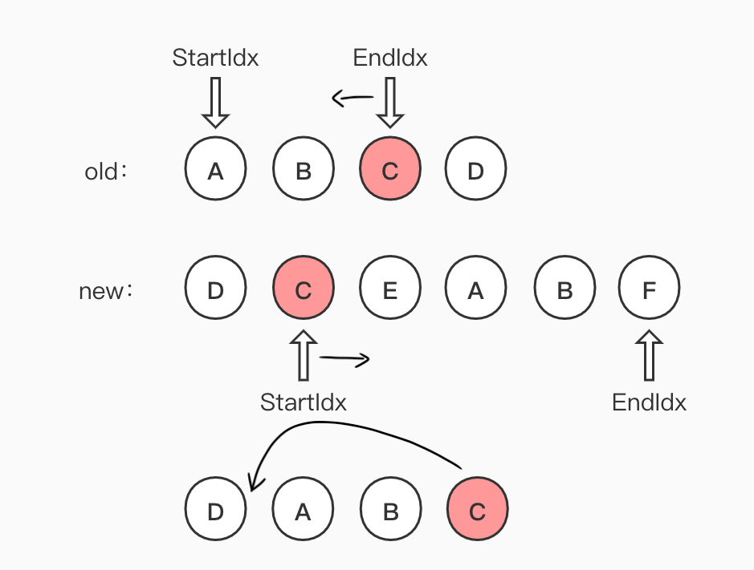
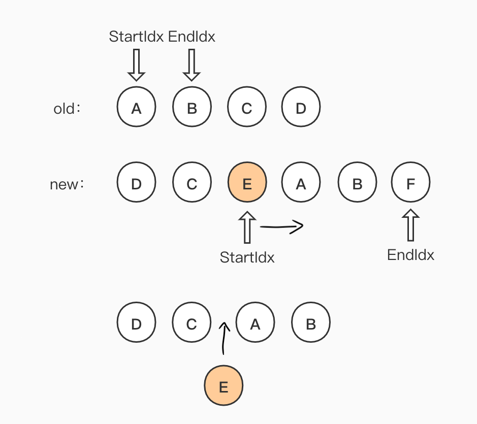
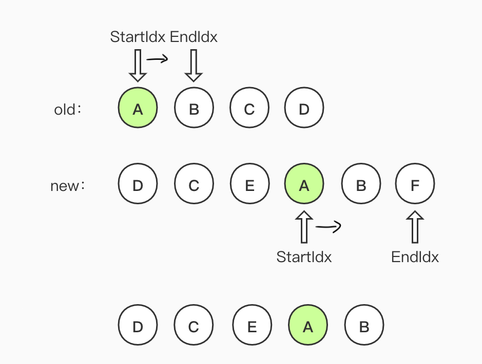
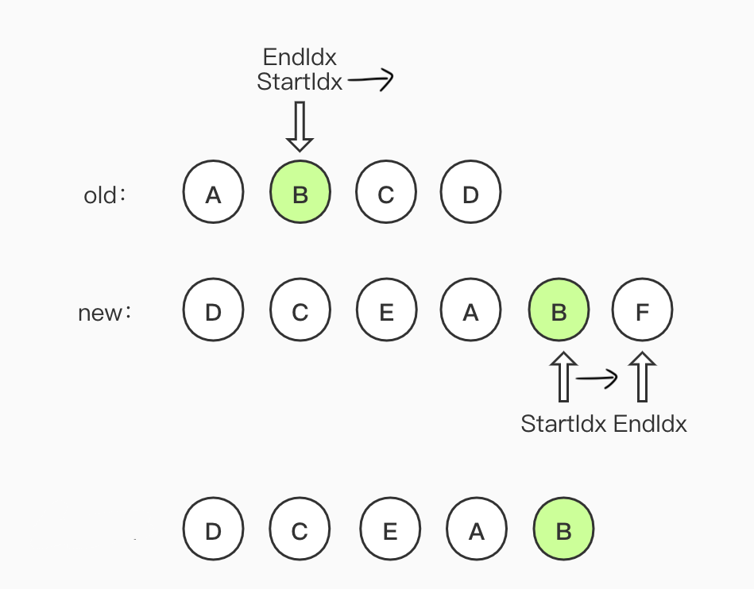
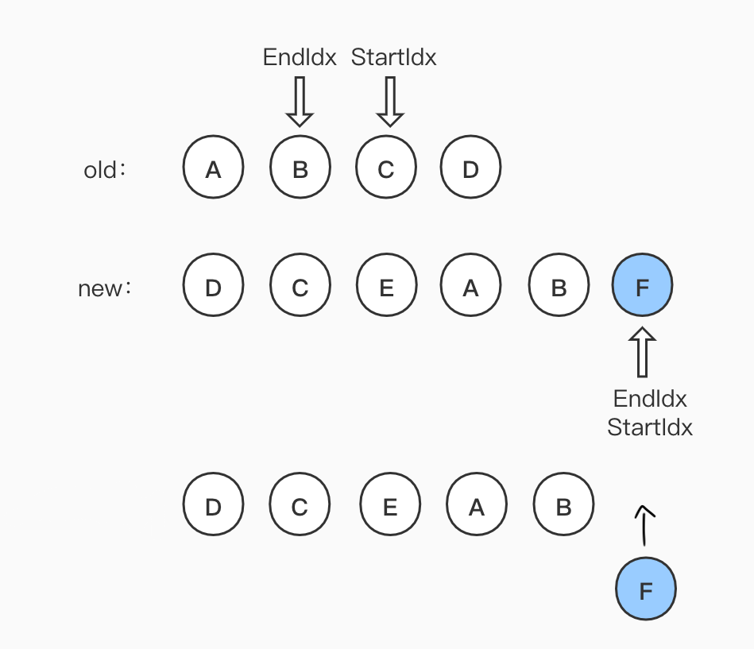
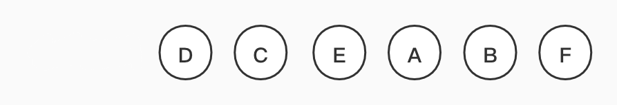

vdom 的核心就是使用 JS 模拟 DOM 节点，然后进行计算与对比，找出最小的更新范围，再更新 DOM 节点。而这个对比过程就是 diff 算法，所以说 diff 算法是 vdom 中最核心、最关键的部分。
diff 算法概述
diff 即对比，这是一个广泛的概念，例如 linux diff、git diff 等，vdom 中的 diff 就是对两颗树做 diff。树 diff 的时间复杂度为 O(n^3)，时间复杂度太高，算法不可用。但是后来创建框架的大佬们将 diff 算法的时间复杂度优化到 O(n)，具体改变如下：
- 只比较同一层级，不跨级比较
- tag 不相同，则直接删掉重建，不再深度比较
- tag 和 key，两者都相同，则认为是相同节点，不再深度比较
 (同一层级比较示例图)
snabbdom 源码解读
注意，本文不是一行行讲解源码，而是通过源码了解 diff 算法的过程。
虚拟 DOM 那一节讲过，snabbdom 的使用重点是：① h函数（根据传递进来的参数，返回一个 vnode 对象）；② vnode 对象（用来表示相应的 dom 结构）；③ patch 函数（找到最小更新范围并更新 DOM 节点）。
以下代码为 snabbdom 源码的缩略，对本文理解不重要的部分被省略，snabbdom 是使用 TypeScript 写的。
我们先看一下 snabbdom 中 h.ts 返回的 h 函数：
1 | export function h(sel: string): VNode; // 只传标签 |
可以看出最终返回的是 vnode 函数的返回值。再继续看一下 vnode 函数：
1 | function vnode (sel: string | undefined, |
可以看出最终返回的是一个对象。
我们使用 h 函数创建完 vnode 之后，最后一步就是使用 patch 函数给真实的 DOM 元素打补丁。就是在 patch 函数内找到最小更新范围并更新 DOM 节点。
diff 算法流程图（和下面的代码结合起来看）：
patch 函数：
1 | function patch (oldVnode: VNode | Element, vnode: VNode): VNode { |
下面具体看一下 sameVnode 函数与 patchVnode 函数。
sameVnode 函数：
1 | function sameVnode (vnode1: VNode, vnode2: VNode): boolean { |
上面说过，为了优化时间复杂度，我们会直接先比较 vnode 的 tag 与 key。若 tag 不相同则直接将节点删掉重建，这样子虽然比较暴力，但是可以大大优化时间复杂度，这是一种取舍。若 tag 与 key 相同时，则认为是相同节点，不再深度比较，直接使用 patchVnode 函数继续比较子节点。只有 v-for 时 key 是必须的，但是其他时候也可以给标签加上 key 属性，若没写 key，则 key 默认为 undefined，undefined 全等于 undefined。
patchVnode 函数：
1 | // 此处我们不关心 insertedVnodeQueue |
若 vnode 和 oldVnode 都有 children，则需要调用 updateChildren 函数进行进一步比较。
updateChildren 函数：
这个函数很复杂，这里只是为了了解它的思想。
1 | // 此处我们不关心 insertedVnodeQueue |
注意，我们之前说过，diff 算法只比较同一层级，不跨级比较，因此我们这里谈论的比较都是对同一层级中的节点进行比较。
示例：
初始状态：
第一步：
第二步：
第三步：
第四步：
第五步：
第六步：
循环结束

将 new 中剩余节点加入
最后结果：
